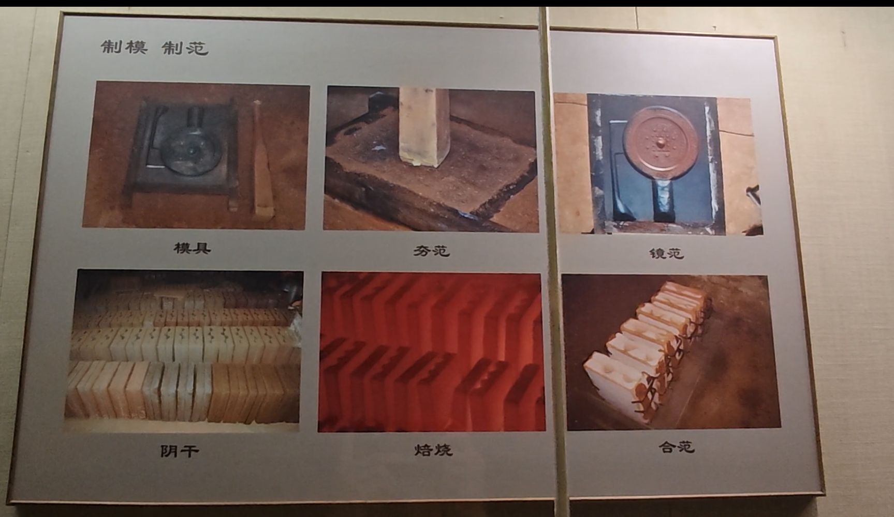
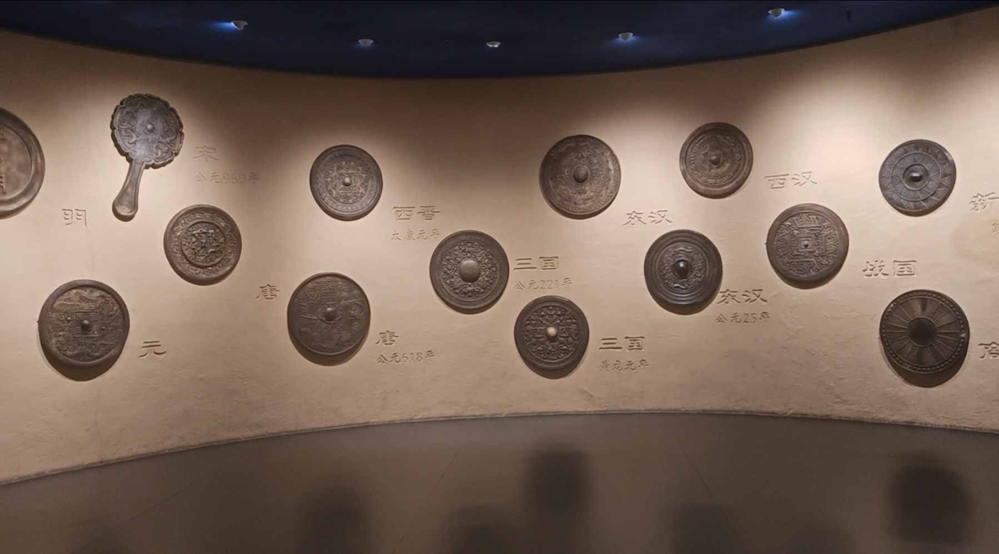

铜镜的制作工艺
铜镜的铸制，始于精密的镜模设计与范型制作，随后将铜锡铅按比例熔炼，再灌注入范腔成型。成镜之后还要经过修整、打磨与抛光，才能使镜面光润如水。每一道工序都依赖匠人细致的手艺与耐心，才能让古铜之色与纹饰在无声中凝住光年。
玄光自青铜而生，古镜凝岁月无声。繁复纹样镌刻先民浪漫，清冷镜光流转世代光景。小小铜鉴，照容颜，亦承载绵延不绝的东方古韵。


铜镜的铸制，始于精密的镜模设计与范型制作，随后将铜锡铅按比例熔炼，再灌注入范腔成型。成镜之后还要经过修整、打磨与抛光，才能使镜面光润如水。每一道工序都依赖匠人细致的手艺与耐心，才能让古铜之色与纹饰在无声中凝住光年。